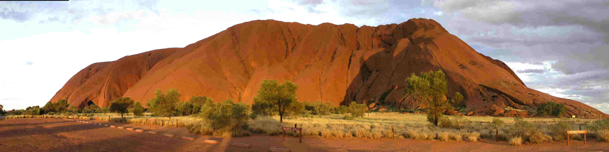
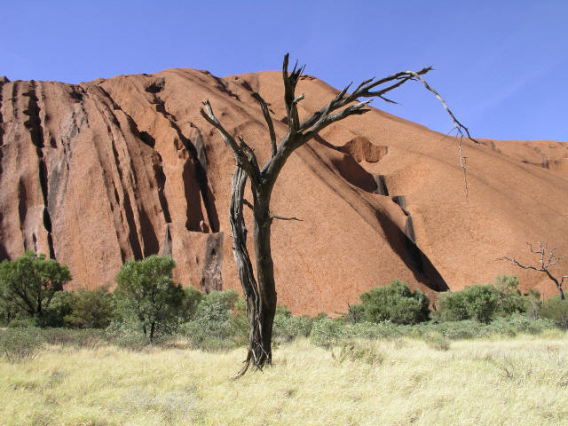
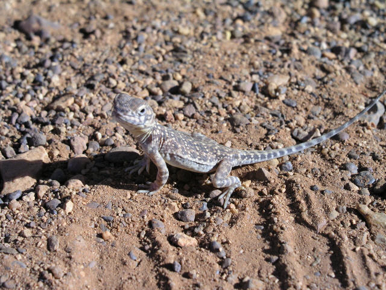
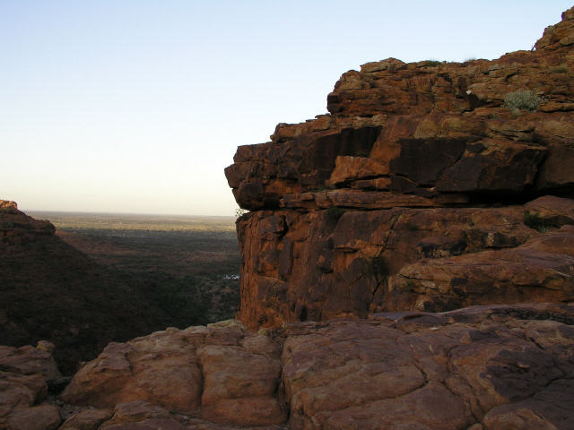
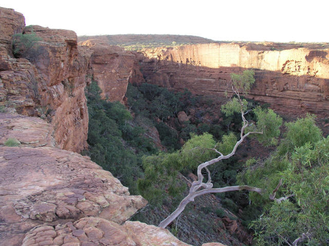
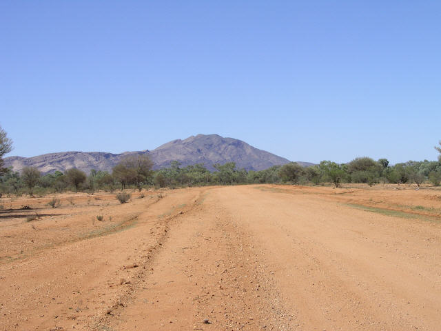
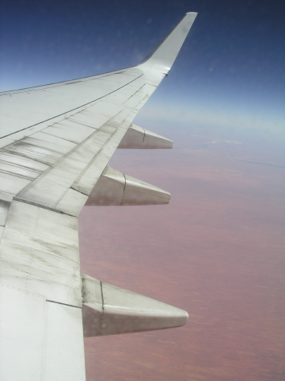

Uluru and Outback
Northern Territory, Australia
Uluru – more commonly known as Ayers Rock – was our destination for Sue’s 30th birthday trip. Neither of us really knew what to expect. I mean, was it going to be one of those places that people talk of but leaves you wondering what all the hype is about? Or was it going to have gained this reputation because it really is something else?
As we flew over, we caught our first glimpse of “The Rock” and even from up there it looked enormous. It is surrounded by red sand and a surprising number of trees and looked just like the postcard shots!
Uluru is the world’s largest monolith. Just to give you an idea of its sheer size, it stretches 3.1km at its longest point and takes about 2 hours to walk around the base.
Well, we discovered that its reputation was well founded. It is very hard to describe Uluru – aside from its enormity, it is strangely beautiful and feels… powerful …for want of a better word. It is no surprise at all that the local Anangu people ascribe great spiritual significance to The Rock.
We were both saddened to see so many people climbing Uluru. At sunrise on Sue’s birthday we walked around the base of The Rock and watched as hoards of tourists disembarked from their buses and, like ants, began the climb. The place where they climb is the traditional route taken by the ancestral men on their arrival at Uluru and therefore highly sacred. The local people ask you not to climb the rock, “That’s a really important sacred thing that you are climbing…you shouldn’t climb,” they say. But still, the ants climb. Incredible!
It was too warm out there to do anything in the heat of the day and so every day involved an early start and an early night. We also took sunrise walks at Tata Kjutu (The Olgas) and King’s Canyon. Both spectacular – and both, as before – indescribable.
We left the outback via Alice Springs - about 300km away from King’s Canyon – on a bumpy 4WD dirt road through the MacDonnell Ranges. I hadn’t done any off-roading before so it was quite an adventure – just me and Sue and miles of red dirt ahead and behind. We both thoroughly enjoyed it but were kind of relieved to get back onto tarmac roads, and to see an end to our saddle-sore!
As we flew over, we caught our first glimpse of “The Rock” and even from up there it looked enormous. It is surrounded by red sand and a surprising number of trees and looked just like the postcard shots!
Uluru is the world’s largest monolith. Just to give you an idea of its sheer size, it stretches 3.1km at its longest point and takes about 2 hours to walk around the base.
Well, we discovered that its reputation was well founded. It is very hard to describe Uluru – aside from its enormity, it is strangely beautiful and feels… powerful …for want of a better word. It is no surprise at all that the local Anangu people ascribe great spiritual significance to The Rock.
We were both saddened to see so many people climbing Uluru. At sunrise on Sue’s birthday we walked around the base of The Rock and watched as hoards of tourists disembarked from their buses and, like ants, began the climb. The place where they climb is the traditional route taken by the ancestral men on their arrival at Uluru and therefore highly sacred. The local people ask you not to climb the rock, “That’s a really important sacred thing that you are climbing…you shouldn’t climb,” they say. But still, the ants climb. Incredible!
It was too warm out there to do anything in the heat of the day and so every day involved an early start and an early night. We also took sunrise walks at Tata Kjutu (The Olgas) and King’s Canyon. Both spectacular – and both, as before – indescribable.
We left the outback via Alice Springs - about 300km away from King’s Canyon – on a bumpy 4WD dirt road through the MacDonnell Ranges. I hadn’t done any off-roading before so it was quite an adventure – just me and Sue and miles of red dirt ahead and behind. We both thoroughly enjoyed it but were kind of relieved to get back onto tarmac roads, and to see an end to our saddle-sore!

Uluru in all it's glory


GGGGggrrrrrrr

King's Canyon view of the beehive looking rocks

From the top of King's Canyon.

More lovely views of King's Canyon.

Off roading from King's Canyon to Alice Springs.

Red sand from the plane. There was another wing just like this on the other side - Phew.